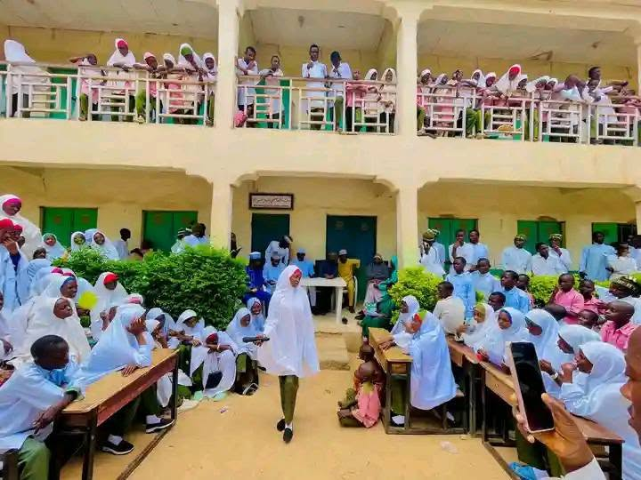
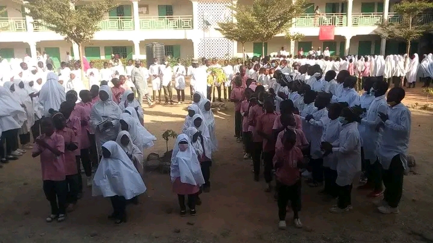
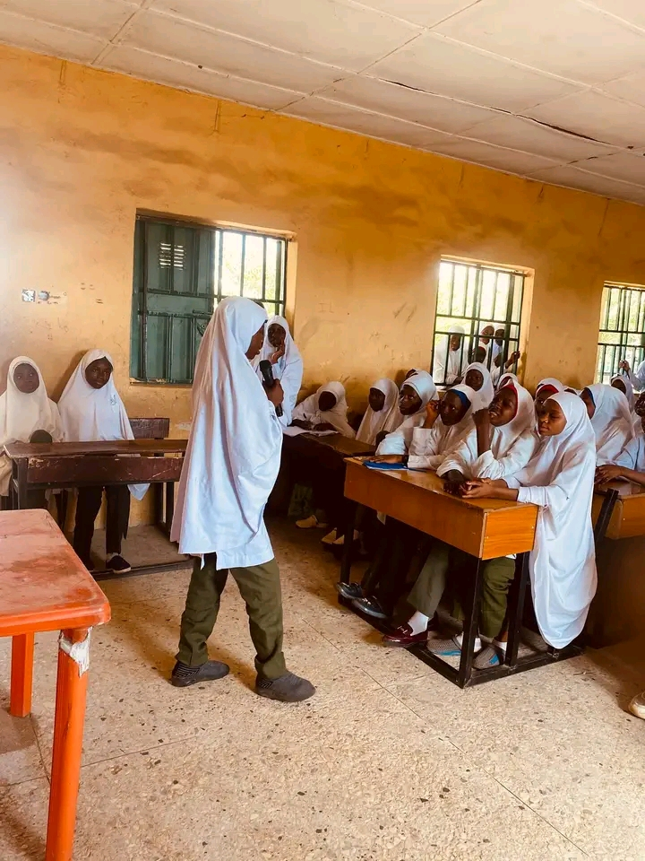
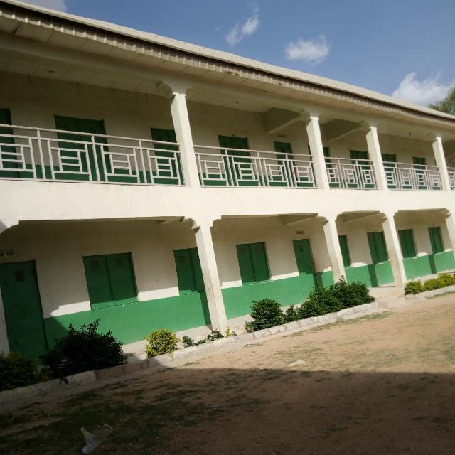
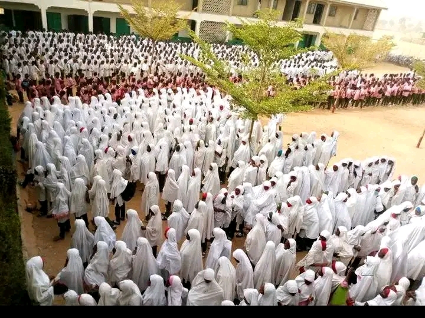
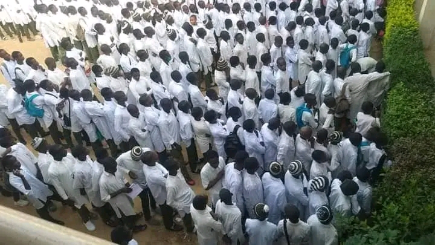
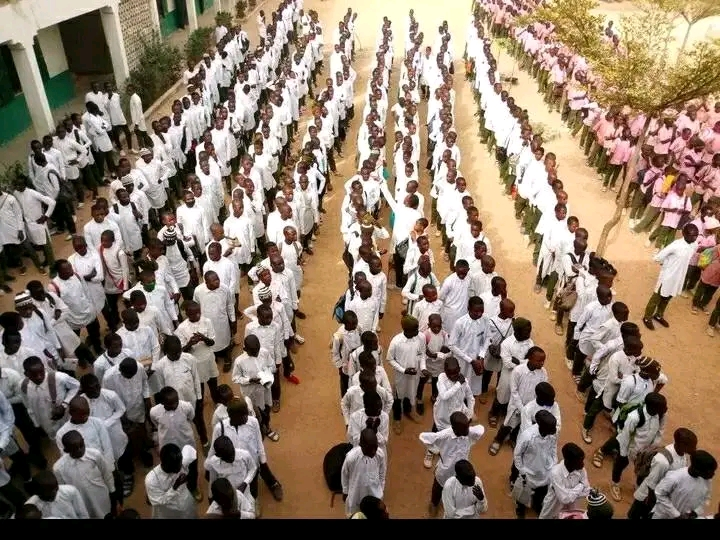
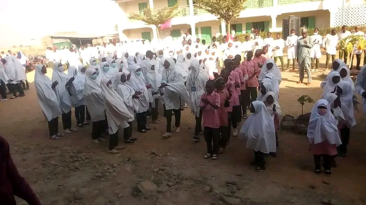
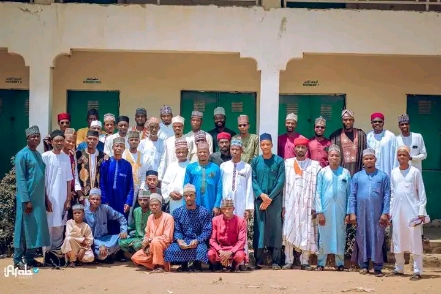
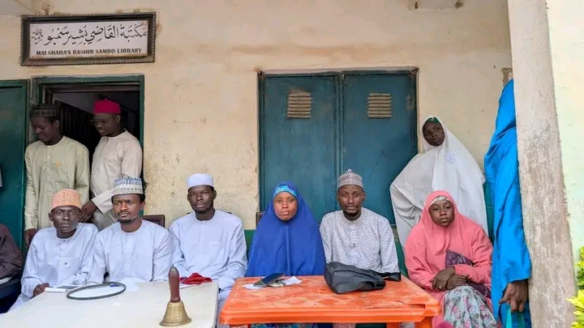

01
Nursery
A caring beginning focused on early development, curiosity, confidence and positive learning habits.
Learn more ↗نُرَبِّي بِالْإِيمَانِ، وَنُعَلِّمُ بِالْعِلْمِ، وَنَرْتَقِي بِالْأَخْلَاقِ
An Islamic-centred learning environment that gives learners a strong foundation in Qur’anic and Islamic education alongside quality Western academic learning.

WELCOME TO AL-AZHAR
الإِيمَانُ وَالْعِلْمُ وَحُسْنُ الْخُلُقِ
Al-Azhar Academy, Zaria is presented in this concept as an institution offering Islamic and Western education across nursery, primary and secondary levels.
This prototype introduces a clear, welcoming digital experience for families and the wider school community. Official history, leadership details and approved school statements will be added after management review.
Explore our learning pathways →ACADEMIC PATHWAYS
Proposed overview of the academy's three education levels. Specific class names and curriculum details are subject to confirmation.
A caring beginning focused on early development, curiosity, confidence and positive learning habits.
Learn more ↗
A balanced foundation that supports literacy, numeracy, discovery, values and growing independence.
Learn more ↗
Learning that encourages deeper understanding, responsibility, critical thinking and preparation for the next stage.
Learn more ↗ISLAMIC EDUCATION
القُرْآنُ الكَرِيمُ · اللُّغَةُ العَرَبِيَّةُ · الدِّرَاسَاتُ الإِسْلَامِيَّةُ
Islamic education is presented as the central pillar of the academy identity, with general academic learning supporting a balanced education.
Qur’anic learning and recitation. Memorisation arrangements will be confirmed by the academy.
Developing learners’ understanding, reading and use of the Arabic language.
Learning about Islamic beliefs, worship, manners and history.
OUR EDUCATIONAL APPROACH
Our proposed digital presentation recognises the academy's combined Islamic and Western education identity. The detailed subjects, teaching structure and assessment approach will be confirmed with school management.
Speak with the school →A dedicated place for the academy's Islamic learning programme and values.
A clear pathway for the academy's general academic curriculum.
Supporting confidence, good character, responsibility and lifelong learning.
OUR LEADERSHIP
قيادة الأكاديمية
Meet the academy's leadership and management team. Official names, titles and approved portraits will be added after confirmation by the school.
Official name to be confirmed
Official name to be confirmed
Official name to be confirmed
Official name to be confirmed
Role and name to be confirmed
Additional dignitary details to be confirmed
ADMISSIONS
Interested in learning more about admission to Al-Azhar Academy? Use the demonstration enquiry form or contact the school through its verified channels once they are provided.
CAMPUS & SCHOOL LIFE
لمحات من الأكاديمية
Photographs shared for the Al-Azhar Academy website prototype.








SCHOOL LIFE
A future news and announcements area for school updates, events, notices and achievements.
Official updates can be published by authorised school administrators after the portal is implemented.
GET IN TOUCH
School address, telephone numbers, email address and office hours have not yet been supplied. These details will be inserted after verification by management.